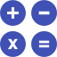

Sobre
O Graphs é uma aplicação para realizar cálculos de funções e demonstrar seus devidos gráficos, calcular limites e derivadas de primeiro grau.
Este é o resultado de um trabalho duro e esforçado de jovens que estão se desenvolvendo cada vez mais, espero que gostem e possam usufruir deste site.
O projeto completo está disponibilizado no seguinte GitHub: GraphsApp.Fiquem à vontade para baixar e modificar da forma como quiserem.
Como funciona

O Graphs é capaz de plotar qualquer gráfico de uma função de apenas uma variável, derivar muitas funções, calcular o limite com valores reais e para lhe ajudar a experimentar nossa aplicação, aqui vão algumas dicas! .
-
Operadores
Comandos para executar as seguintes operações:
Multiplicação: * ou deixar implícito (ex: 2x ou 2*x)
Potência: ^ (ex: x^2)
Raiz quadrada: sqrt(equação) (ex: sqrt(2x) = √2x)
Raiz de qualquer expoente: nthRoot(equação, expoente) (ex: nthRoot(2x, 3))
Fração: numerador / denominador (ex: (2x)/(5x) )
-
Gráficos
Ao plotar o gráfico, poderão aparecer duas funções dependendo da forma como você preenche os dados, portanto, cada função tem sua cor:
Função normal: Verde
Função inversa: Vermelho
-
Leis das funções
As leis das funções são seus polinômios, ou seja, a expressão que geralmente vem depois do "f(x) ="
No Graphs, eles são digitados usando os operadores de acordo com sua vontade, aqui vão alguns exemplos:
x^2+5x+10 10*x+5 sqrt(x^3+5x) nthRoot(x^2+4x,3)
Funções prontas
Caso você tenha dificuldade em pensar em alguma função, temos algumas já prontas!
É só clicar e ser feliz ;) !
Limitações
O Graphs foi desenvolvido por estudantes do 2º perído do curso de Ciências da Computação, por isso ele possui algumas limitações:
- Calcular derivada de funções com raiz acima do expoente 2;
- Não é possível plotar o gráfico da inversa de função exponencial e nem logarítmica, tendo em vista que só podemos digitar leis de apenas uma variável;
- Calcular limite tendendo ao infinito;
- Mais limitações serão percebidas ao longo do uso.
Resultados:
O resultado da derivada de 1ª ordem é :